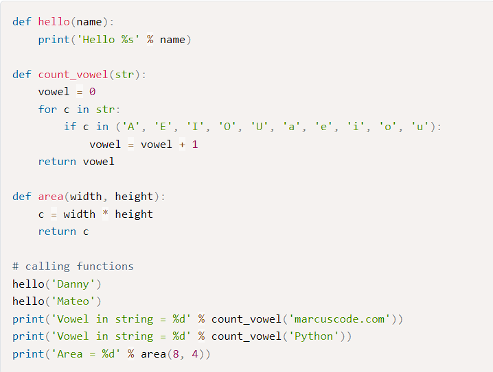
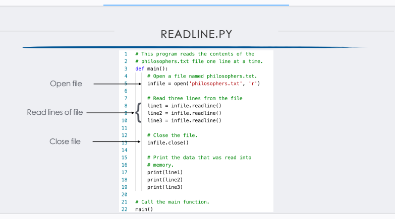
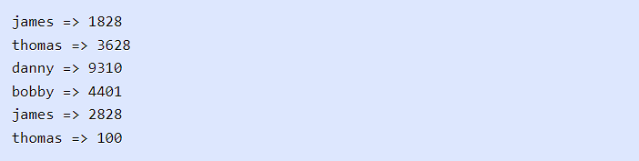
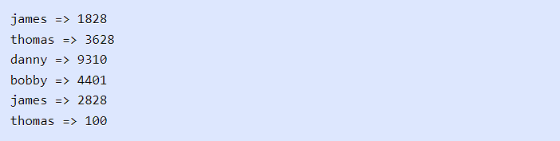
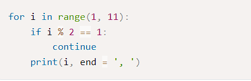
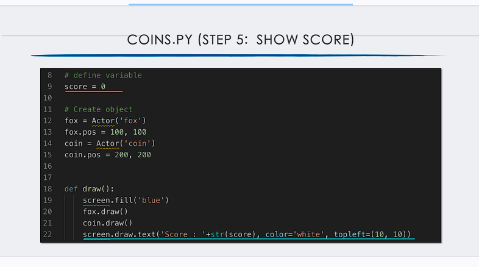

FUNCTIONS
ในบทนี้ คุณจะได้เรียนรู้เกี่ยวกับฟั...งก์ชันในภาษา Python
เราจะพูดถึงการสร้างและการใช้งานฟังก์ชันในเบื้องต้น และการเรียกใช้งานฟังก์ชันในรูปแบบต่างๆ
ที่สำคัญ เช่น Default Argument และ Keyword Augment และมากไปกว่านั้น
เราจะแนะนำให้คุณรู้จักกับ built-in ฟังก์ชันในภาษา Python
ฟังก์ชันคือส่วนของโค้ดที่ใช้ซ้ำได้ซึ่งทำหน้าที่ดำเนินการ
ฟังก์ชันมีชื่อและเรียกหรือดำเนินการตามชื่อนั้น
ฟังก์ชันสามารถยอมรับอาร์กิวเมนต์และส่งคืนข้อมูลได้
การสร้างฟังก์ชันในภาษา Python
ฟังก์ชัน (Function)
คือส่วนของโค้ดหรือโปรแกรมที่ทำงานเพื่อวัตถุประสงค์บางอย่าง ในภาษา Python
คุณสามารถสร้างฟังก์ชันของคุณเองเพื่อให้ทำงานที่ต้องการ
ในการเขียนโปรแกรมเรามักจะแยกโค้ดที่มีการทำงานเหมือนๆ กันเป็นฟังก์ชันเอาไว้
และเรียกใช้ฟังก์ชันนั้นซ้ำๆ ซึ่งเป็นแนวคิดของการนำโค้ดกลับมาใช้ใหม่ (Code reuse)
นี่เป็นรูปแบบของการประกาศฟังก์ชันในภาษา Python
ในรูปแบบของการประกาศฟังก์ชันในภาษา Python นั้นจะใช้คำสั่ง def
และหลังจากนั้น function_name เป็นชื่อของฟังก์ชัน และในวงเล็บ ()
เป็นการกำหนดพารามิเตอร์ของฟังก์ชัน
พารามิเตอร์ของฟังก์ชันนั้นสามารถมีจำนวนเท่าไหร่ก็ได้หรือไม่มีก็ได้ และเช่นเดียวกับภาษาอื่นๆ
ฟังก์ชันอาจจะมีหรือไม่มีการส่งค่ากลับ สำหรับฟังก์ชันที่ไม่มีการ return ค่ากลับนั้น
เรามักจะเรียกว่า โพรซีเยอร์ (Procedure) ต่อไปมาดูตัวอย่างการประกาศและใช้งานฟังก์ชันในภาษา
Python
ในตัวอย่าง
เราได้สร้างฟังก์ชันจำนวน 3 ฟังก์ชัน ฟังก์ชันแรกมีชื่อว่า hello()
เป็นฟังก์ชันสำหรับแสดงข้อความทักทายจากที่ชื่อส่งเข้ามา ฟังก์ชันนี้มีหนึ่งพารามิเตอร์คือ name
สำหรับรับชื่อที่ส่งเข้ามาในฟังก์ชันต่อมาฟังก์ชัน count_vowel() เป็นฟังก์ชันสำหรับนับจำนวนสระใน String
ฟังก์ชันนี้มีหนึ่ง String พารามิเตอร์ ในการทำงานของฟังก์ชันนั้นเราใช้คำสั่ง For loop
ในการวนอ่านค่าทีละตัวอักษรเพื่อตรวจสอบว่าเป็นสระหรือไม่ด้วยคำสั่ง in และตัวแปร vowel
นั้นใช้สำหรับนับจำนวนสระที่พบใน String
ในตอนท้ายเราได้ส่งค่าของจำนวนสระที่นับได้กลับไปด้วยคำสั่ง return
และฟังกชันสุดท้ายคือฟังก์ชัน
area()
เป็นฟังก์ชันสำหรับหาพื้นที่ของรูปสี่เหลี่ยมด้านขนาน
และฟังก์ชันมีพารามิเตอร์สองตัวสำหรับความกว้างและความยาวของสี่เหลี่ยม และฟังก์ชันทำการ return
ผลลัพธ์ที่เป็นพื้นที่กลับไปด้วยคำสั่ง return
การเรียกใช้งานฟังก์ชันในภาษา Python
หลังจากเราได้สร้างฟังก์ชันในตัวอย่างก่อนหน้าแล้ว ต่อไปเราจะมาเรียกใช้งานฟังก์ชันเหล่านั้น
ในการเรียกใช้ฟังก์ชันนั้นเราจะใช้ชื่อของฟังก์ชันและส่งอาร์กิวเมนต์ให้สอดคล้องกับพารามิเตอร์ที่กำหนดไว้ในฟังก์ชัน
ดังนั้นอาร์กิวเมนต์คือค่าที่ส่งเข้าไปในฟังก์ชันตอนใช้งาน
ส่วนพารามิเตอร์นั้นคือตัวแปรทีกำหนดไว้ในฟังก์ชันเพื่อรับค่าจากอาร์กิวเมนต์
มาดูตัวอย่างการเรียกใช้งานฟังก์ชันในภาษา Python
ในตัวอย่าง
เป็นการเรียกใช้งานฟังก์ชันที่เราสร้างขึ้น เราได้เรียกใช้ฟังก์ชัน hello()
และส่งอาร์กิวเมนต์ที่เป็น String เข้าไปยังฟังก์ชัน เราเรียกใช้ฟังก์ชันนี้สองครั้ง
ซึ่งนี่เองเป็นการ reuse โค้ดในการเขียนโปรแกรม
หลังจากนั้นเราเรียกใช้ฟังก์ชัน count_vowel() และฟังก์ชัน area()
และส่งพารามิเตอร์ที่ถูกต้องไปยังฟังก์ชัน และเพราะว่าฟังก์ชันเหล่านี้มีการ return ค่ากลับ
เราสามารถนำค่าเหล่านี้ไปใช้งานได้ต่อไป เราได้นำไปใช้กับฟังก์ชัน print()
เพื่อจัดรูปแบบการแสดงผล
Default Argument Values
ในภาษา Python เราสามารถสร้างฟังก์ชันโดยการกำหนด Default Argument
ให้กับฟังก์ชันพารามิเตอร์ได้ Default Argument
เป็นการการกำหนดค่าเริ่มต้นให้กับอาร์กิวเมนต์ที่ส่งเข้ามายังฟังก์ชัน
นั่นทำให้เราสามารถเรียกใช้งานฟังก์ชันโดยการส่งอาร์กิวเมนต์น้อยกว่าจำนวนที่กำหนดไว้ในฟังก์ชันได้
ซึ่งอำนวยความสะดวกในการใช้งานมากขึ้น มาดูตัวอย่างการสร้างและใช้งานฟังก์ชันกับ Default
Argument
ในตัวอย่าง เราได้สร้างฟังก์ชัน show_info() สำหรับแสดงข้อมูลของโปรแกรมเมอร์
ข้อมูลที่จำเป็นต้องการจะแสดงนั้นมีชื่อ เงินเดือน และภาษาที่เขียน ในฟังก์ชันของเรานั้นมี 3
พารามิเตอร์ พารามิเตอร์แรก name นั้นเป็นพารามิเตอร์แบบปกติ และสองพารามิเตอร์นั้นเป็น Default
Argument ซึ่งเรากำหนดค่าเริ่มต้นให้กับพารามิเตอร์โดยใช้เครื่องหมาย =
ในการกำหนดพารามิเตอร์นั้น Default Argument ต้องอยู่หลังพารามิเตอร์แบบปกติเสมอ
ในการเรียกใช้งานฟังก์ชันนั้น เราต้องทำการส่งค่าอาร์กิวเมนต์สำหรับพารามิเตอร์แบบปกติเสมอ
ส่วนพารามิเตอร์แบบ Default Argument นั้นเป็นทางเลือก ในตัวอย่าง
คำสั่งเราเรียกใช้ฟังก์ชันโดยอาร์กิวเมนต์เพียงหนึ่งตัวเข้าไป
ทำให้สองอาร์กิวเมนต์ที่เหลือที่เป็น Default Argument ใช้ค่าเริ่มต้นของมันแทน คือ 84360
สำหรับเงินเดือน และ "Python" สำหรับภาษาเขียนโปรแกรม
ต่อมาเราเรียกใช้ฟังก์ชันโดยการส่งสองอาร์กิวเมนต์เข้าไป
ทำให้มีเพียงพารามิเตอร์สุดท้ายเท่านั้นที่ใช้ค่าเริ่มต้น
และในคำสั่งสุดท้ายเป็นการส่งค่าครบจำนวนให้กับทุกอาร์กิวเมนต์
Keyword Arguments
ในภาษา Python เราสามารถเรียกใช้งานฟังก์ชันในรูปแบบของ Keyword Argument
โดยการใช้ชื่อของพารามิเตอร์สำหรับส่งอาร์กิวเมนต์ ในการใช้งานนั้น
พารามิเตอร์ต้องมีการกำหนดในรูปแบบของ Default Argument ก่อน มาดูตัวอย่างการใช้งาน Keyword
Arguments ในภาษา Python
ในตัวอย่าง เราได้สร้างฟังก์ชันสำหรับการสร้างปุ่ม ในการเรียกใช้งานฟังก์ชันนั้น
เราสามารถเรียกโดยวิธีการส่งแบบ Keyword Argument ได้ในรูปแบบของ argument = value
และสามารถสลับตำแหน่งของอาร์กิวเมนต์ได้ และในฟังก์ชันนั้นเรามีอาร์กิวเมนต์ id
ซึ่งเป็นอาร์กิวเมนต์แบบปกติ สำหรับอาร์กิวเมนต์แบบปกติในการส่งค่านั้นต้องส่งเป็นลำดับแรกเสมอ
เหมือนในคำสั่งการเรียกใช้งานสองคำสั่งแรก หรือสามารถส่งแบบ Keyword Argument
ก็ได้เช่นกันเหมือนในคำสั่งที่สามและสี่
Lambda Expressions
Lambda Expressions คือ anonymous function
ที่เป็นฟังก์ชันที่มีการทำงานขนาดเล็กอยู่ภายในที่สามารถมีได้เพียง Expression เดียวเท่านั้น
เราสามารถสร้างโดยใช้คำสั่ง lambda เราสามารถใช้ Lambda Expressions สร้างออบเจ็คของฟังก์ชันได้
และค่า return จะเป็นค่าที่ได้จากผลลัพธ์ของ Expression ของฟังก์ชัน มาดูตัวอย่างการใช้งาน
ในตัวอย่าง เราได้สร้าง Lambda Expressions เป็นจำนวนสามฟังก์ชัน
ฟังก์ชันแรกเป็นฟังก์ชันสำหรับเพิ่มตัวเลขขึ้น 1
และฟังก์ชันที่สองเป็นฟังก์ชันสำหรับหาค่าเฉลี่ยของตัวเลขสองจำนวน
คุณจะสังเกตได้ว่าฟังก์ชันแรกนั้นมี 1 อาร์กิวเมนต์และฟังก์ชันที่สองนั้นมี 2 อาร์กิวเมนต์
และฟังก์ชันสุดท้ายนั้นเป็นการ return ฟังก์ชันกลับภายในฟังก์ชันอีกที
และเป็นฟังก์ชันสำหรับเพิ่มตัวเลขขึ้นจำนวน n จากอาร์กิวเมนต์ที่ใส่เข้าไป
นอกจากนี้ Lambda Expressions ยังมีประโยชน์เพื่อใช้งานกับ built-in function เช่น ฟังก์ชัน
filter() และฟังก์ชัน map() ในภาษา Python มันใช้เป็นอาร์กิวเมนต์ส่งเข้าไปในฟังก์ชัน
เพื่อสร้าง Expression ให้กับฟังก์ชัน มาดูตัวอย่างการใช้งาน
ในตัวอย่าง เรามีลิสต์ของตัวเลข Integer และเราได้ใช้ฟังก์ชัน filter() และฟังก์ชัน map()
ซึ่งเป็นฟังก์ชันที่มีอาร์กิวเมนต์ตัวแรกเป็นฟังก์ชัน และตัวที่สองเป็นลิสต์
ในการทำงานของฟังก์ชัน filter() เราได้ใช้ฟังก์ชันกรองเอาตัวเลขที่ตรงกันกับ Lambda Expressions
ซึ่งก็คือตัวเลขในลิสต์ที่หารด้วย 5 ลงตัว และในการใช้ฟังก์ชัน map()
เป็นการเชื่อมโยงค่าในลิสต์ให้ตรงกับ Lambda Expressions คือการเพิ่มตัวเลขให้เป็นสองเท่า
ซึ่งทั้งสองฟังก์ชันนี้ส่งค่ากลับเป็นออบเจ็ค และเราใช้ฟังก์ชัน list()
เพื่อแปลงออบเจ็คให้เป็นสิสต์
Summary
ในบทนี้ คุณได้เรียนรู้เกี่ยวกับการสร้างและใช้งานฟังก์ชันในภาษา Python
และการเรียกใช้ฟังก์ชันในรูปแบบอื่นๆ เช่น Default Argument และ Keyword Argument
และนอกจากนี้เรายังแนะนำให้คุณรู้จักกับการใช้งาน Lambda Expressions
เพื่อสร้างฟังก์ชันขนาดเล็กแต่ช่วยอำนวยความสะดวกในการทำงานเป็นอย่างมาก
และแนะนำให้คุณรู้จักกับ built-in function
LECTURE - 05 FUNCTIONS
LECTURE - 06 FILES AND EXCEPTIONS
FILE INPUT/OUTPUT
เพื่อให้โปรแกรมเก็บข้อมูลระหว่างเวลาที่รัน
คุณต้องบันทึกข้อมูล
ข้อมูลจะถูกบันทึกลงในไฟล์ โดยทั่วไปแล้วจะอยู่บนดิสก์คอมพิวเตอร์
ข้อมูลที่บันทึกไว้สามารถเรียกค้นและใช้งานได้ในภายหลัง
• "กำลังเขียนข้อมูลไปที่" : บันทึกข้อมูลลงในไฟล์
• ไฟล์เอาต์พุต: ไฟล์ที่เขียนข้อมูลถึง
• "การอ่านข้อมูลจาก" : กระบวน...การดึงข้อมูลจากไฟล์
• ไฟล์อินพุต: ไฟล์ที่ใช้อ่านข้อมูล
TYPE OF FILES
โดยทั่วไป ไฟล์สองประเภท
1. ไฟล์ข้อความ: มีข้อมูลที่เข้ารหัสเป็นข้อความ
2. ไฟล์ไบนารี:
มีข้อมูลที่ยังไม่ได้แปลงเป็นข้อความสองวิธีในการเข้าถึงข้อมูลที่จัดเก็บไว้ในไฟล์
1. การเข้าถึงตามลำดับ: ไฟล์อ่านตามลำดับตั้งแต่ต้นจนจบไม่สามารถข้ามไปข้างหน้าได้
2. การเข้าถึงโดยตรง: สามารถข้ามไปยังข้อมูลใด ๆ ในไฟล์ได้โดยตรง
FILE
มีสามขั้นตอนเสมอที่ต้องทำเมื่อไฟล์ถูกใช้โดยโปรแกรม
• เปิดไฟล์ - การเปิดไฟล์จะสร้างการเชื่อมต่อระหว่างไฟล์กับโปรแกรม
การเปิดไฟล์เอาท์พุตมักจะสร้างไฟล์บนดิสก์และอนุญาตให้โปรแกรมทำ
เขียนข้อมูลลงไป การเปิดไฟล์อินพุตทำให้โปรแกรมสามารถอ่านข้อมูลจากไฟล์ได้
• ประมวลผลไฟล์ - ในขั้นตอนนี้ ข้อมูลจะถูกเขียนไปยังไฟล์ (หากเป็นไฟล์เอาต์พุต) หรือ read
จากไฟล์ (หากเป็นไฟล์อินพุต)
• ปิดไฟล์ - เมื่อโปรแกรมใช้งานไฟล์เสร็จแล้ว ไฟล์จะต้องปิดลง
การปิดไฟล์จะยกเลิกการเชื่อมต่อไฟล์จากโปรแกรม
Input / Output
OPEN FILE

Using Loop to Process File
DETECTING END OF FILE
เปิดไฟล์
ใช้ readline เพื่ออ่านบรรทัดแรกจากไฟล์ในขณะที่ค่าที่ส่งคืนจาก readline ไม่ใช่สตริงว่าง:
ประมวลผลรายการที่เพิ่งอ่านจากไฟล์ ใช้ readline เพื่ออ่านบรรทัดถัดไปจากไฟล์
ปิดไฟล์
Processing Record
• บันทึก: ชุดข้อมูลที่อธิบายหนึ่งรายการ
• ฟิลด์: ข้อมูลชิ้นเดียวภายในบันทึก
• เขียนบันทึกไปยังไฟล์เข้าถึงตามลำดับโดยการเขียนฟิลด์ทีละรายการ
• อ่านบันทึกจากไฟล์เข้าถึงตามลำดับโดยอ่านแต่ละช่องจนกว่าบันทึกจะสมบูรณ์
เมื่อทำงานกับเรกคอร์ด สิ่งสำคัญคือต้องสามารถ:
• เพิ่มบันทึก
• แสดงบันทึก
• ค้นหาบันทึกเฉพาะ
• แก้ไขบันทึก
• ลบบันทึก
Exceptions
• ข้อยกเว้น: ข้อผิดพลาดที่เกิดขึ้นขณะโปรแกรมกำลังทำงาน
มักจะทำให้โปรแกรมหยุดกะทันหัน
• Traceback: ข้อความแสดงข้อผิดพลาดที่ให้ข้อมูลเกี่ยวกับ
หมายเลขบรรทัดที่ทำให้เกิดข้อยกเว้น
1)ระบุประเภทของข้อยกเว้นและคำอธิบายโดยย่อของ
2)ข้อผิดพลาดที่ทำให้เกิดข้อยกเว้นขึ้น
• ตัวจัดการข้อยกเว้น: รหัสที่ตอบสนองเมื่อมีการยกข้อยกเว้นและป้องกันโปรแกรมจากการแครช
• ใน Python เขียนเป็นคำสั่ง try/except
รูปแบบทั่วไป:
1.try:
2.statements
3.except exceptionName:
statements
• ลอง suite: คำสั่งที่อาจก่อให้เกิดข้อยกเว้น
• ตัวจัดการ: คำสั่งที่มีอยู่ในยกเว้น block
• ข้อยกเว้นหลายประการสามารถป้องกันได้ด้วยการเข้ารหัสอย่างระมัดระวัง
ตัวอย่าง: input validation
มักจะเกี่ยวข้องกับการสร้างการตัดสินใจที่เรียบง่าย
• ข้อยกเว้นบางประการไม่สามารถหลีกเลี่ยงได้โดยการเข้ารหัสอย่างระมัดระวัง
ตัวอย่าง
กำลังพยายามแปลงสตริงที่ไม่ใช่ตัวเลขเป็นจำนวนเต็ม
พยายามเปิดอ่านไฟล์ที่ไม่มีอยู่
•
หากคำสั่งในชุดทดลองทำให้เกิดข้อยกเว้น:
ข้อยกเว้นที่ระบุไว้ในข้อยกเว้น:
ตัวจัดการติดตามทันทียกเว้นคำสั่งดำเนินการ
ต่อโปรแกรมหลังจากลอง/ยกเว้นคำสั่ง
ข้อยกเว้นอื่นๆ:
โปรแกรมหยุดทำงานโดยมีข้อความแสดงข้อผิดพลาดในการย้อนกลับ
• หากไม่มีข้อยกเว้น ตัวจัดการจะถูกข้าม
HANDLING MULTIPLE EXCEPTIONS
• บ่อยครั้งที่โค้ดในชุดทดลองสามารถโยน . ได้มากกว่าหนึ่งประเภท
ข้อยกเว้น
ต้องเขียนยกเว้นอนุประโยคสำหรับข้อยกเว้นแต่ละประเภทว่า
ต้องจัดการ
• ข้อยกเว้นที่ไม่แสดงรายการข้อยกเว้นเฉพาะจะจัดการกับข้อยกเว้นใด ๆ ที่ยกขึ้นในชุดทดลอง
ควรจะอยู่ลำดับสุดท้ายในชุดของยกเว้นอนุประโยค
DISPLAYING AN EXCEPTION'S DEFAULT ERROR MESSAGE
Exception object:วัตถุที่สร้างขึ้นในหน่วยความจำเมื่อมีการโยนข้อยกเว้น
มักจะมีข้อความแสดงข้อผิดพลาดเริ่มต้นที่เกี่ยวข้องกับข้อยกเว้น
สามารถกำหนด exception object to a variable in an except clause
Example: except ValueError as err:
สามารถส่งผ่านตัวแปรอ็อบเจ็กต์ข้อยกเว้นไปยังฟังก์ชันการพิมพ์เพื่อแสดงข้อความแสดงข้อผิดพลาดเริ่มต้นได้
THE ELSE CLAUSE
try/except อาจรวมถึงประโยคทางเลือกอื่น ซึ่งปรากฏต่อท้ายประโยคยกเว้นทั้งหมด
สอดคล้องกับลองและยกเว้นข้อ
Syntax: คล้ายกับประโยคอื่นในโครงสร้างการตัดสินใจ
Else suite:บล็อกของคำสั่งที่ดำเนินการหลังจากคำสั่งในชุดทดลอง
เฉพาะในกรณีที่ไม่มีการยกข้อยกเว้น
หากยกข้อยกเว้นชุดอื่นจะถูกข้าม
 THE FINALLY CLAUSE
• try/except คำสั่งอาจรวมถึงประโยค finally ตัวเลือกซึ่งปรากฏหลังจากทั้งหมด
the except clauses
THE FINALLY CLAUSE
• try/except คำสั่งอาจรวมถึงประโยค finally ตัวเลือกซึ่งปรากฏหลังจากทั้งหมด
the except clauses
Aligned with try and except clauses
•General format:
•finally:
statements
Finally suite: block of statements after the finally clause
•ดำเนินการไม่ว่าจะมีข้อยกเว้นเกิดขึ้นหรือไม่
•จุดประสงค์คือทำการล้างข้อมูลก่อนออก
LECTURE - 07 LISTS AND TUPLES
Lists ในภาษา Python ในบทนี้ คุณจะได้เรียนรู้เกี่ยวกับโครงสร้างข้อมูลแบบ List
ในภาษา Python เราจะพูดถึงการสร้างและใช้งาน List ในเบื้องต้น
การใช้งานเมธอดและฟังก์ชันเพื่อจัด...การข้อมูลภายใน List
และการใช้งานคำสั่ง For loop กับ List
รวมถึงการ slicing
List (ลิสต์) คือโครงสร้างข้อมูลชนิดหนึ่งในภาษา Python ที่ใช้เก็บข้อมูลแบบลำดับ (Sequence)
โดยมี
Index เป็นตัวระบุตำแหน่งในการเข้าถึงข้อมูล เราสามารถใช้ List
เพื่อเก็บข้อมูลจำนวนมากและหลากหลายประเภทในเวลาเดียวกัน List
เป็นประเภทข้อมูลที่ใช้อย่างหลากหลายในการเขียนโปรแกรม นอกจากนี้ ในภาษา Python ยังมี built-in
function ที่สามารถทำงานกับ List และใน List ออบเจ็คเองก็มีเมธอดต่างๆ
เป็นจำนวนมากที่ช่วยอำนวยความสะดวกในการเขียนโปรแกรม
การประกาศและใช้งาน List
List นั้นเป็นตัวแปรประเภทหนึ่ง การใช้งานของมันจะเหมือนกับอาเรย์ในภาษาอื่นๆ
ในการประกาศ
List นั้นข้อมูลของมันจะอยู่ภายในเครื่องหมาย []
และคั่นสมาชิกแต่ละตัวด้วยเครื่องหมายคอมมา
, มาดูตัวอย่างการประกาศ List ในภาษา Python
ในตัวอย่าง
เราได้สร้างตัวแปร List สามตัวแปร numbers เป็นตัวแปร List
ที่มีสมาชิกเป็นตัวเลขจำนวนเต็ม
6 ตัว names เป็น List ของ String ที่สำหรับเก็บชื่อและมี 5 รายชื่อ และสุดท้ายตัวแปร
mixed_type เป็น List ที่เก็บข้อมูลประเภทต่างๆ
แบบรวมกันในตัวแปรเดียวซึ่งมีสมาชิกทั้งหมด
5 ตัว ซึ่งทั้งหมดนี้เป็นการกำหนดสมาชิกให้กับ List พร้อมกับการประกาศตัวแปร ในภาษา
Python
เราสามารถกำหนดค่าให้กับ List หลังจากประกาศตัวแปรแล้วได้ มาดูตัวอย่าง
 ในตัวอย่าง เป็นการกำหนดค่าให้กับ List หลังจากที่มันถูกสร้างแล้ว เราใช้เมธอด append()
เพื่อเพิ่มข้อมูลใหม่เข้าไปใน List ซึ่งข้อมูลที่เพิ่มเข้าจะอยู่ท้ายสุดและเรียง Index
เพิ่มขึ้นไปเรื่อยๆ โดยเริ่มจาก 0 ในตัวแปร numbers เราได้เพิ่ม 5 จำนวนเต็มเข้าไปใน
List
และในตัวแปร names ในตอนแรกได้ประกาศและกำหนดสองชื่อให้กับตัวแปร
และเพิ่มเข้าไปภายหลังอีก
3 ชื่อ และฟังก์ชัน len() ใช้เพื่อนับจำนวนสมาชิกภายใน List
นี่เป็นผลลัพธ์การทำงานของโปรแกรม
ในตัวอย่าง เป็นการกำหนดค่าให้กับ List หลังจากที่มันถูกสร้างแล้ว เราใช้เมธอด append()
เพื่อเพิ่มข้อมูลใหม่เข้าไปใน List ซึ่งข้อมูลที่เพิ่มเข้าจะอยู่ท้ายสุดและเรียง Index
เพิ่มขึ้นไปเรื่อยๆ โดยเริ่มจาก 0 ในตัวแปร numbers เราได้เพิ่ม 5 จำนวนเต็มเข้าไปใน
List
และในตัวแปร names ในตอนแรกได้ประกาศและกำหนดสองชื่อให้กับตัวแปร
และเพิ่มเข้าไปภายหลังอีก
3 ชื่อ และฟังก์ชัน len() ใช้เพื่อนับจำนวนสมาชิกภายใน List
นี่เป็นผลลัพธ์การทำงานของโปรแกรม
 การเข้าถึงข้อมูลภายใน List
การเข้าถึงข้อมูลภายใน List
List นั้นใช้ Index สำหรับการเข้าถึงข้อมูล โดย Index ของ List
จะเป็นจำนวนเต็มที่เริ่มจาก
0 และเพิ่มขึ้นทีละ 1 ไปเรื่อยๆ ดังนั้น เราจึงสามารถเข้าถึงข้อมูลภายใน List
เพื่ออ่านหรืออัพเดทค่าได้โดยตรงผ่าน Index ของมัน นี่เป็นโค้ดการเข้าถึงข้อมูลภายใน
List
ในภาษา Python
 ในตัวอย่าง เรามีตัวแปร List ที่ชื่อว่า names ดังนั้น เพื่อเข้าถึงสมาชิกตัวแรกภายใน
List
ซึ่งก็คือ "Mateo" นั้นจะใช้คำสั่ง names[0] และสมาชิกที่มีค่าเป็น "Thomas"
ซึ่งอยู่ตำแหน่งที่ 4 จะใช้คำสั่ง names[3] สังเกตว่า Index จะลดลงหนึ่งเพราะ Index ของ
List นั้นเริ่มต้นจาก 0
ในตัวอย่าง เรามีตัวแปร List ที่ชื่อว่า names ดังนั้น เพื่อเข้าถึงสมาชิกตัวแรกภายใน
List
ซึ่งก็คือ "Mateo" นั้นจะใช้คำสั่ง names[0] และสมาชิกที่มีค่าเป็น "Thomas"
ซึ่งอยู่ตำแหน่งที่ 4 จะใช้คำสั่ง names[3] สังเกตว่า Index จะลดลงหนึ่งเพราะ Index ของ
List นั้นเริ่มต้นจาก 0
 นอกจากนี้ เราสามารถเข้าถึงข้อมูลภายใน List โดยการใช้ Index เป็นจำนวนลบได้
โดยเริ่มจาก -1
ซึ่งเป็นสมาชิกตัวสุดท้ายของ List และ -2 สมาชิกตัวถัดมาและลดลงไปทีละ 1
นอกจากนี้ เราสามารถเข้าถึงข้อมูลภายใน List โดยการใช้ Index เป็นจำนวนลบได้
โดยเริ่มจาก -1
ซึ่งเป็นสมาชิกตัวสุดท้ายของ List และ -2 สมาชิกตัวถัดมาและลดลงไปทีละ 1
 นี่เป็นการอัพเดทค่าของสมาชิกภายใน List
ในตัวอย่างเราได้เปลี่ยนค่าของสมาชิกในตำแหน่งแรกของ List จากเดิมที่เป็น "Mateo"
ให้เป็น
"Bob"
การอ่านค่าใน List ด้วยคำสัง For loop
นี่เป็นการอัพเดทค่าของสมาชิกภายใน List
ในตัวอย่างเราได้เปลี่ยนค่าของสมาชิกในตำแหน่งแรกของ List จากเดิมที่เป็น "Mateo"
ให้เป็น
"Bob"
การอ่านค่าใน List ด้วยคำสัง For loop
เนื่องจาก List นั้นเก็บข้อมูลเป็นแบบลำดับและใช้ Index ในการเข้าถึงข้อมูล ดังนั้น
เราจึงมักจะใช้คำสั่งวนซ้ำสำหรับการเขียนโปรแกรมที่ทำงานกับ List
เพราะทำให้การทำงานรวดเร็วและง่ายขึ้น เช่น การใช้คำสั่งวนซ้ำวนอ่านค่าใน List
ที่มีข้อมูลเป็นจำนวนมาก เป็นต้น ต่อไปมาดูตัวอย่างการใช้งานคำสั่ง For loop กับ List
ในภาษา Python
 ในตัวอย่าง เป็นการวนอ่านค่าภายใน List ด้วยการใช้คำสั่ง For loop
โดยเราได้แยกการทำงานออกเป็นสองลูป ในลูปแรกเป็นการใช้งานคำสั่ง For loop
เพื่อวนอ่านค่าภายใน List numbers โดยตรง
โปรแกรมจะวนอ่านค่าไปทีละค่าและนำค่าในแต่ละรอบที่ได้มาใส่ในตัวแปร n
เราได้ทำการแสดงผลตัวเลขภายใน List และหาผลรวมของตัวเลขภายใน List โดยเก็บไว้ในตัวแปร
sum
ในลูปที่สอง เป็นการใช้คำสั่ง For loop เช่นกัน แต่ในตอนนี้เราจะสร้าง Index
ขึ้นมาโดยการใช้ตัวแปร i เป็นตัวรัน Index จาก 0 ถึงขนาดตัวสุดท้ายของ List
ที่สร้างจากฟังก์ชัน range() และเราแสดงผลชื่อในตัวพิมพ์ใหญ่ด้วยเมธอด upper() ของ
String
List slicing
ในตัวอย่าง เป็นการวนอ่านค่าภายใน List ด้วยการใช้คำสั่ง For loop
โดยเราได้แยกการทำงานออกเป็นสองลูป ในลูปแรกเป็นการใช้งานคำสั่ง For loop
เพื่อวนอ่านค่าภายใน List numbers โดยตรง
โปรแกรมจะวนอ่านค่าไปทีละค่าและนำค่าในแต่ละรอบที่ได้มาใส่ในตัวแปร n
เราได้ทำการแสดงผลตัวเลขภายใน List และหาผลรวมของตัวเลขภายใน List โดยเก็บไว้ในตัวแปร
sum
ในลูปที่สอง เป็นการใช้คำสั่ง For loop เช่นกัน แต่ในตอนนี้เราจะสร้าง Index
ขึ้นมาโดยการใช้ตัวแปร i เป็นตัวรัน Index จาก 0 ถึงขนาดตัวสุดท้ายของ List
ที่สร้างจากฟังก์ชัน range() และเราแสดงผลชื่อในตัวพิมพ์ใหญ่ด้วยเมธอด upper() ของ
String
List slicing
ในภาษา Python เราสามารถตัดข้อมูลจาก List หนึ่งแล้วนำไปสร้างเป็น List ใหม่ได้
โดยวิธีดังกล่าวนั้นเรียกกว่า slicing ในการตัดข้อมูลใน List นั้นจะทำในรูปแบบ [a:b]
เมื่อ
a เป็น Index เริ่มต้นและ b เป็น Index ก่อนสมาชิกตัวสุดท้ายที่ต้องการตัด
มาดูตัวอย่างของ
list slicing
 ในตัวอย่าง เรามีตัวแปร ch ซึ่งมีสมาชิกเป็นตัวอักษรในภาษาอังกฤษจาก a ถึง h
หลังจากนั้นเราได้ทำการ slice ข้อมูลจาก List ดังกล่าว ในตัวแปร a
นั้นเป็นการตัดเอาข้อมูลจากตำแหน่งที่ 0 ถึง 3 มา ในตัวแปร b นั้นตัดเอาตำแหน่งที่ 4
ถึง 8
ถัดมาเป็นตัวแปร c d และ e เป็นการเว้นว่างตำแหน่งข้างหน้าและข้างหลัง
ซึ่งถ้าตำแหน่งข้างหน้าถูกเว้นว่างไว้ เป็นการตัดเอาสมาชิกตั้งแต่ตำแหน่งเริ่มต้นของ
List
และถ้าตำแหน่งสิ้นสุดถูกเว้นว่างไว้ เป็นการตัดเอาจนถึงสมาชิกตัวสุดท้ายของ List
และในตัวแปร f เป็นการตัดเอาสองส่วนของ List มาต่อกัน ในการนำสอง List
มาต่อกันนั้นเราจะใช้ตัวดำเนินการ +
ในตัวอย่าง เรามีตัวแปร ch ซึ่งมีสมาชิกเป็นตัวอักษรในภาษาอังกฤษจาก a ถึง h
หลังจากนั้นเราได้ทำการ slice ข้อมูลจาก List ดังกล่าว ในตัวแปร a
นั้นเป็นการตัดเอาข้อมูลจากตำแหน่งที่ 0 ถึง 3 มา ในตัวแปร b นั้นตัดเอาตำแหน่งที่ 4
ถึง 8
ถัดมาเป็นตัวแปร c d และ e เป็นการเว้นว่างตำแหน่งข้างหน้าและข้างหลัง
ซึ่งถ้าตำแหน่งข้างหน้าถูกเว้นว่างไว้ เป็นการตัดเอาสมาชิกตั้งแต่ตำแหน่งเริ่มต้นของ
List
และถ้าตำแหน่งสิ้นสุดถูกเว้นว่างไว้ เป็นการตัดเอาจนถึงสมาชิกตัวสุดท้ายของ List
และในตัวแปร f เป็นการตัดเอาสองส่วนของ List มาต่อกัน ในการนำสอง List
มาต่อกันนั้นเราจะใช้ตัวดำเนินการ +
 การใช้งานคำสั่ง del เพื่อลบข้อมูลใน List
การใช้งานคำสั่ง del เพื่อลบข้อมูลใน List
คำสั่ง del เป็นคำสั่งที่ใช้สำหรับลบตัวแปรใดๆ
ออกไปจากหน่วยความจำหรือใช้ยกเลิกตัวแปรที่เคยประกาศไปแล้ว เราสามารถใช้คำสั่ง del
เพื่อลบสมาชิกภายใน List ได้เช่นเดียวกัน มาดูตัวอย่างการใช้งานคำสั่ง del ในภาษา
Python
ในตัวอย่าง เป็นการใช้งานคำสั่ง del สำหรับลบสมาชิกภายใน List ในตอนแรก เราได้ลบอักษร a
ออกไปจาก List ซึ่งสมาชิกตัวแรกนั้นจะมี Index เป็น 0 ดังนั้น เมื่อการลบเสร็จสิ้น List
จะทำการเลื่อนตัวอักษร b มายัง Index 0 แทน ซึ่งสิ่งนี้เป็นสภาวะการสูญเสียตำแหน่งของ
List
หรือ Index lose หลังจากนั้น เราได้ลบโดยการใช้วิธีการกำหนด Index แบบ slicing
เราได้ทำการลบค่าจาก Index 0 ถึง 3 ซึ่งเป็นการลบตัวอักษรจาก e ถึง f
และในคำสั่งสุดท้ายเป็นการลบข้อมูลภายใน List ทั้งหมด
 Warning: จากตัวอย่างข้างต้นนั้น เมื่อคุณต้องการลบข้อมูลทั้งหมดภายใน List เราจะใช้
del
ch[:] เพราะว่าเป็นการลบแบบ slicing
จากตำแหน่งแรกถึงตำแหน่งสุดท้ายและจะทำให้มันกลายเป็น
List ว่างปล่าว เมื่อคุณใช้คำสั่ง del ch จะหมายความว่าลบตัวแปรออกไปจากหน่วยความจำแทน
Summary
Warning: จากตัวอย่างข้างต้นนั้น เมื่อคุณต้องการลบข้อมูลทั้งหมดภายใน List เราจะใช้
del
ch[:] เพราะว่าเป็นการลบแบบ slicing
จากตำแหน่งแรกถึงตำแหน่งสุดท้ายและจะทำให้มันกลายเป็น
List ว่างปล่าว เมื่อคุณใช้คำสั่ง del ch จะหมายความว่าลบตัวแปรออกไปจากหน่วยความจำแทน
Summary
ในบทนี้ คุณได้เรียนรู้เกี่ยวกับการประกาศและใช้งาน List ในภาษา Python
นอกจากนี้เรายังใช้คำสัง For loop เพื่อให้ง่ายในการอ่านข้อมูลภายใน List
รวมทั้งการตัดข้อมูลใน List ด้วยการ slicing และการใช้คำสั่ง del เพื่อลบข้อมูลภายใน
List
ออกไป ในบทต่อไป จะเป็นการใช้งานฟังก์ชันและเมธอดของ List
Tuples ในภาษา Python
ในบทนี้ คุณจะได้เรียนรู้เกี่ยวกับ Tuple ในภาษา Python และทำความรู้จักกับว่า Tuple
คืออะไร เราจะพูดถึงการสร้างและใช้งาน Tuple และตอนที่จะต้องใช้งานในการเขียนโปรแกรม
นอกจากนี้ เรายังจะพูดถึงการใช้งานเมธอดและฟังก์ชันต่างๆ ของ Tuple
ในการเขียนโปรแกรมภาษา Python นั้น Tuple จะคล้ายกับ List แต่สิ่งที่แตกต่างกันคือ
Tuple
นั้นเป็นประเภทข้อมูลที่ไม่สามารถเปลี่ยนแปลงได้ (Immutable) หรือกล่าวอีกนัยหนึ่ง
หลังจากที่ประกาศตัวแปรและกำหนดค่าให้กับ Tuple แล้ว
มันจะไม่สามารถเปลี่ยนแปลงค่าได้ในภายหลัง ในขณะที่ List สามารถทำได้
เนื่องจากว่า Tuples นั้นไม่สามารถเปลี่ยนแปลงค่าได้
ดังนั้นมันจึงมักจะใช้เก็บข้อมูลที่มีประเภทแตกต่างกันซึ่งจะทำงานได้ดีกว่า List
และในการใช้งาน Loop กับ Tuple จะเพิ่มความเร็วขึ้นเล็กน้อย นอกจากนี้เรายังสามารถใช้
Tuple
เป็นค่าคงที่สำหรับข้อมูลที่ไม่ต้องการให้เปลี่ยนแปลงได้
การประกาศ Tuple ในภาษา Python
ในภาษา Python การประกาศ Tuple นั้นสามารถทำได้หลายวิธี
รูปแบบพื้นฐานของมันคือสมาชิกของ
Tuple ทุกตัวจะอยู่ภายในวงเล็บ () และคั่นสมาชิกแต่ละตัวด้วยเครื่องหมายคอมมา (,)
นี่เป็นตัวอย่างของการประกาศ Tuple ในรูปแบบต่างๆ
 ในตัวอย่าง เป็นการประกาศ Tuple ในตัวแปร a และ b เป็นรูปแบบมาตฐานในการประกาศ Tuple
แต่ในตัวแปร b นั้นจะเป็นรูปแบบสั้นซึ่งไม่แนะนำสำหรับการฝึกปฏิบัติที่ดี และในตัวแปร c
และ
d นั้นเป็นการสร้าง Tuple ด้วยการใช้ฟังก์ชัน tuple() โดยสร้างจาก List
หรือออบเจ็คที่สามารถวนรอบได้ (Iterable) จากฟังก์ชัน range()
และในตัวแปร e นั้นเป็นการประกาศ Tuple ที่มีสมาชิกเพียงตัวเดียวจะต้องใส่คอมมา (,)
ต่อท้ายให้กับสมาชิกเสมอ เพราะไม่เช่นนั้นตัวแปรดังกล่าวจะเป็น String แทน
และในตัวแปรสุดท้าย f เป็นการประกาศ Tuple ว่างเปล่า หลังจากนั้นเราแสดงผลค่าของ Tuple
ออกทางหน้าจอ
การเข้าถึงสมาชิกภายใน Tuple
ในตัวอย่าง เป็นการประกาศ Tuple ในตัวแปร a และ b เป็นรูปแบบมาตฐานในการประกาศ Tuple
แต่ในตัวแปร b นั้นจะเป็นรูปแบบสั้นซึ่งไม่แนะนำสำหรับการฝึกปฏิบัติที่ดี และในตัวแปร c
และ
d นั้นเป็นการสร้าง Tuple ด้วยการใช้ฟังก์ชัน tuple() โดยสร้างจาก List
หรือออบเจ็คที่สามารถวนรอบได้ (Iterable) จากฟังก์ชัน range()
และในตัวแปร e นั้นเป็นการประกาศ Tuple ที่มีสมาชิกเพียงตัวเดียวจะต้องใส่คอมมา (,)
ต่อท้ายให้กับสมาชิกเสมอ เพราะไม่เช่นนั้นตัวแปรดังกล่าวจะเป็น String แทน
และในตัวแปรสุดท้าย f เป็นการประกาศ Tuple ว่างเปล่า หลังจากนั้นเราแสดงผลค่าของ Tuple
ออกทางหน้าจอ
การเข้าถึงสมาชิกภายใน Tuple
ในการเข้าถึงสมาชิกภายใน Tuple นั้นจะใช้ Index เช่นเดียวกับ List โดยสมาชิกตัวแรกจะมี
Index เป็นศูนย์ และสำหรับสมาชิกตัวต่อไปจะเพิ่มขึ้นทีละ 1 Tuple
มักจะใช้กับประเภทข้อมูลที่แตกต่างกันและสมาชิกของมันจะไม่สามารถเปลี่ยนแปลงค่าได้
นั่นคือ
Tuple สามารถอ่านได้เพียงอย่างเดียว มาดูตัวอย่างการอ่านค่าของ Tuple ในภาษา Python
 ในตัวอย่าง เป็นการเข้าถึงสมาชิกใน Tuple เพื่ออ่านค่าภายใน ตัวแปร numbers นั้นเป็น
Tuple
ที่มีสมาชิกเป็นเพียงตัวเลข Integer เราเข้าถึงสมาชิกตัวแรกของมันด้วย numbers[0]
และสมาชิกตัวที่สี่ด้วย numbers[3] เราสามารถใช้ Index เป็นจำนวนเต็มลบได้
โดยเริ่มตั้งแต่
-1 ซึ่งเป็นสมาชิกตัวสุดท้ายใน Tuple
ต่อไปเป็นการประกาศตัวแปร mixed_type ซึ่งประกอบไปด้วยข้อมูลประเภทต่างๆ เช่น ตัวเลข
String
และ List และเราเข้าถึงสมาชิกผ่านทาง Index เช่นเดิม สำหรับ Sequence ที่ซ้อนกัน
เราจะใช้รูปแบบ Index ของการเข้าถึงเป็น [m][n] เหมือนในคำสั่ง mixed_type[3][0]
ในตัวอย่าง เป็นการเข้าถึงสมาชิกใน Tuple เพื่ออ่านค่าภายใน ตัวแปร numbers นั้นเป็น
Tuple
ที่มีสมาชิกเป็นเพียงตัวเลข Integer เราเข้าถึงสมาชิกตัวแรกของมันด้วย numbers[0]
และสมาชิกตัวที่สี่ด้วย numbers[3] เราสามารถใช้ Index เป็นจำนวนเต็มลบได้
โดยเริ่มตั้งแต่
-1 ซึ่งเป็นสมาชิกตัวสุดท้ายใน Tuple
ต่อไปเป็นการประกาศตัวแปร mixed_type ซึ่งประกอบไปด้วยข้อมูลประเภทต่างๆ เช่น ตัวเลข
String
และ List และเราเข้าถึงสมาชิกผ่านทาง Index เช่นเดิม สำหรับ Sequence ที่ซ้อนกัน
เราจะใช้รูปแบบ Index ของการเข้าถึงเป็น [m][n] เหมือนในคำสั่ง mixed_type[3][0]
 การอ่านค่าใน Tuple ด้วยคำสั่ง For loop
การอ่านค่าใน Tuple ด้วยคำสั่ง For loop
เนื่องจาก Tuple นั้นเป็นข้อมูลแบบ Sequence เช่นเดียวกับ List
ดังนั้นมันจึงสะดวกที่จะใช้คำสังวนซ้ำ เช่น For loop เพื่อวนอ่านข้อมูลใน Tuple
มาดูตัวอย่างการอ่านค่าสมาชิกของ Tuple ด้วยการใช้คำสั่ง For loop ในภาษา Python
 ในตัวอย่าง
เป็นการใช้ For loop เพื่อวนอ่านค่าใน Tuple ในลูปแรกเป็นการวนอ่านค่าในตัวแปร numbers
แบบทีละค่าด้วยการใช้คำสั่ง in ในการวนแต่ละรอบโปรแกรมจะนำค่าภายใน Tuple
มาเก็บไว้ในตัวแปร
n ในลูปที่สองเป็นการใช้ For loop เพื่อสร้าง Index ตั้งแต่ 0
ถึงตัวสุดท้ายและเข้าถึงค่าของ Tuple ผ่านทาง Index ของมัน
Tuple slicing
ในตัวอย่าง
เป็นการใช้ For loop เพื่อวนอ่านค่าใน Tuple ในลูปแรกเป็นการวนอ่านค่าในตัวแปร numbers
แบบทีละค่าด้วยการใช้คำสั่ง in ในการวนแต่ละรอบโปรแกรมจะนำค่าภายใน Tuple
มาเก็บไว้ในตัวแปร
n ในลูปที่สองเป็นการใช้ For loop เพื่อสร้าง Index ตั้งแต่ 0
ถึงตัวสุดท้ายและเข้าถึงค่าของ Tuple ผ่านทาง Index ของมัน
Tuple slicing
ในการทำงานกับ Tuple เราสามารถแบ่งมันออกเป็นส่วนย่อยๆ ได้เช่นเดียวกับ List
ด้วยวิธีการที่เรียกว่า Slicing โดยปกติแล้วมันมักจะใช้สำหรับคัดลอกข้อมูลจาก Tuple
เดิมเพื่อสร้างอันใหม่ ซึ่งการ slice นั้นจะทำในรูปแบบของ Index ของ Tuple [start:end]
มาดูตัวอย่าง

 Python Tuple methods
Python Tuple methods
เนื่องจากค่าของ Tuple นั้นไม่สามารถแก้ไขได้ ดังนั้นมันจึงมีเมธอดน้อยกว่าที่ List มี
คือเมธอด count() ใช้สำหรับนับจำนวนออบเจ็คใน Tuple และเมธอด index()
ใช้สำหรับหาตำแหน่งแรกของออบเจ็คใน Tuple มาดูตัวอย่างการใช้เมธอดของ Tuple ในภาษา
Python
 ในตัวอย่าง เป็นการใช้งานเมธอดของ Tuple เรามีตัวแปร languages
สำหรับเก็บชื่อของภาษาเขียนโปรแกรม และเราใช้เมธอด count() เพื่อนับว่าพบ 'Python'
กี่อันภายใน Tuple และเมธอด index() ใช้สำหรับหา Index ของออบเจ็คภายใน Tuple
Python Tuple functions
ในตัวอย่าง เป็นการใช้งานเมธอดของ Tuple เรามีตัวแปร languages
สำหรับเก็บชื่อของภาษาเขียนโปรแกรม และเราใช้เมธอด count() เพื่อนับว่าพบ 'Python'
กี่อันภายใน Tuple และเมธอด index() ใช้สำหรับหา Index ของออบเจ็คภายใน Tuple
Python Tuple functions
ในภาษา Python นั้นมีฟังก์ชันต่างๆ สำหรับทำงานกับ Sequence โดยทั่วไปแล้ว List และ
Tuple
นั้นจะสามารถใช้งานฟังก์ชันเหล่านี้ได้เหมือนกัน นี่เป็นตารางของ built-in function ของ
Tuple
Summary
ในบทนี้ คุณได้เรียนรู้เกี่ยวกับออบเจ็คที่ไม่สามารถเปลี่ยนแปลงค่าได้ Tuple
การสร้างและใช้งาน Tuple ในภาษา Python การเข้าถึงสมาชิกของมัน และการแบ่งข้อมูลโดยการ
Slice เพื่อแยกข้อมูลจาก Tuple เดิมให้เป็นอันใหม่ เราได้แนะนำให้คุณรู้จักกับเมธอดใน
Tuple
พร้อมทั้งตัวอย่างการใช้งาน และ built-in functions ของ Tuple
LECTURE - 08 Dictionary
Dictionary ในภาษา Pythonในบทนี้ คุณจะได้เรียนรู้เกี่ยวกับโครงสร้างข้อมูล
Dictionary ในภาษา Python เราจะแนะนำให้คุณรู้จักกับ Dictionary คืออะไร
และการประกาศและใช้งานสำหรับเก็บข้อมูลในการเขียนโ...ปรแกรม
นอกจากนี้
เรายังจะพูดถึงการใช้งานเมธอดและ built-in functions ของ Dictionary
และตัวอย่างการใช้งานกับการเขียนโปรแกรมในรูปแบบต่างๆ ในภาษา Python
Dictionary คือประเภทข้อมูลที่เก็บข้อมูลในรูปแบบคู่ของ Key และ Value โดยที่ Key ใช้สำหรับเป็น
Index ในการเข้าถึงข้อมูลและ Value เป็นค่าข้อมูลที่สอดคล้องกับ Key ของมัน การเข้าถึงข้อมูลใน
Dictionary นั้นรวดเร็วเพราะว่าข้อมูลได้ถูกทำ Index ไว้อัตโนมัติโดยใช้ Key นอกจากนี้
Dictionary ยังมีเมธอดและฟังก์ชันอำนวยความสะดวกสำหรับการทำงานทั่วไป
การประกาศ Dictionary ในภาษา Python
ในการใช้งาน Dictionary
เรามักจะใช้เก็บข้อมูลที่สามารถใช้บางอย่างที่สามารถจำแนกข้อมูลออกจากกันได้
โดยกำหนดให้สิ่งนั้นเป็น Key ในการประกาศ Dictionary สมาชิกของมันจะอยู่ภายในวงเล็บปีกกา {}
มาดูตัวอย่างในการประกาศ Dictionary ในภาษา Python
 ในตัวอย่าง เราได้ประกาศตัวแปร Dictionary ที่มีชื่อว่า scores
สำหรับเก็บคะแนนของแต่ละคนโดยใช้ชื่อเป็น Key และค่าของมันก็คือคะแนน สมาชิกของ Dictionary
แต่ละตัวจะถูกกำหนดในรูปแบบ key: value และคั่นสมาชิกแต่ละตัวด้วยเครื่องหมายคอมมา
เราได้กำหนดค่าเริ่มต้นสามค่าให้กับ Dictionary และสามารถกำหนดค่าให้กับ Dictionary ในรูปแบบ
scores['bobby'] ได้หลังจากที่ตัวแปรถูกสร้างแล้ว สังเกตว่าเราสามารถใช้ Key เป็น String
หรือประเภทข้อมูลอื่นๆ ได้ ต่อมาตัวแปร numbers เป็น Dictionary ที่มี Key เป็นตัวเลข
ในตัวอย่าง เราได้ประกาศตัวแปร Dictionary ที่มีชื่อว่า scores
สำหรับเก็บคะแนนของแต่ละคนโดยใช้ชื่อเป็น Key และค่าของมันก็คือคะแนน สมาชิกของ Dictionary
แต่ละตัวจะถูกกำหนดในรูปแบบ key: value และคั่นสมาชิกแต่ละตัวด้วยเครื่องหมายคอมมา
เราได้กำหนดค่าเริ่มต้นสามค่าให้กับ Dictionary และสามารถกำหนดค่าให้กับ Dictionary ในรูปแบบ
scores['bobby'] ได้หลังจากที่ตัวแปรถูกสร้างแล้ว สังเกตว่าเราสามารถใช้ Key เป็น String
หรือประเภทข้อมูลอื่นๆ ได้ ต่อมาตัวแปร numbers เป็น Dictionary ที่มี Key เป็นตัวเลข
 การเข้าถึงข้อมูลภายใน Dictionaryหลังจากที่เราได้ประกาศ Dictionary ไปแล้ว
ต่อไปจะเป็นการเข้าถึงข้อมูลเพื่ออ่านและอัพเดทข้อมูลโดยผ่านทาง Key ของมัน
มาดูตัวอย่างการเข้าถึงข้อมูลใน Dictionary
ในตัวอย่าง เรามีตัวแปร scores สำหรับเก็บคะแนนของผู้เล่นโดยชื่อเป็น Key ของ Dictionary
ในการเข้าถึงข้อมูลนั้นจะใช้ Key ของมัน ในส่วนแรกเป็นการเข้าถึงข้อมูลภายใน Dictionary
เพื่อแสดงผลคะแนนของแต่ละ Key ออกมาทางหน้าจอ ต่อมาเป็นการอัพเดทข้อมูลใน Dictionary
โดยเราได้เพิ่มค่าให้กับ Key 'james' ขึ้นไปอีก 1000 และกำหนดค่าให้กับ Key 'thomas' เป็น 100
และแสดงผลอีกครั้ง

การอ่านค่าใน Dictionary ด้วยคำสั่ง For loopคำสั่ง For loop
นั้นเป็นคำสั่งที่ยืดหยุ่นและสามารถใช้งานได้อย่างหลากหลาย ในการอ่านค่าใน Dictionary
นั้นเราสามารถใช้ For loop เพื่อวนอ่านค่าทั้ง Key และ Values ใน Dictionary ได้
มาดูตัวอย่างของโปรแกรม
ในตัวอย่าง เป็นการใช้งานคำสั่ง For loop วนอ่านค่าใน Dictionary ซึ่งมี 3 loop ด้วยกัน
ในลูปแรกเป็นการอ่านค่าแบบ Key และ Value ในแต่ละรอบของการทำงานเราเอาข้อมูลใน Dictionary
ด้วยเมธอด items() ซึ่งจะส่งค่ากลับเป็น Key และ Value กับมาและโหลดใส่ในตัวแปร k และ v
ตามลำดับ
ในลูปที่สอง เป็นการวนอ่าน Key ทั้งหมดภายใน Dictionary โดยเมธอด keys() จะส่งค่ากลับเป็น List
ของ Key ทั้งหมดและโหลดใส่ในตัวแปร k แต่ละรอบของลูป และในลูปสุดท้ายนั้นเป็นการอ่าน Value
ทั้งหมด และเมธอด values() เพื่อรับค่าของ Value ทั้งหมดมาและใส่ในตัวแปร v ในแต่ละรอบของลูป
การเข้าถึงข้อมูลภายใน Dictionaryหลังจากที่เราได้ประกาศ Dictionary ไปแล้ว
ต่อไปจะเป็นการเข้าถึงข้อมูลเพื่ออ่านและอัพเดทข้อมูลโดยผ่านทาง Key ของมัน
มาดูตัวอย่างการเข้าถึงข้อมูลใน Dictionary
ในตัวอย่าง เรามีตัวแปร scores สำหรับเก็บคะแนนของผู้เล่นโดยชื่อเป็น Key ของ Dictionary
ในการเข้าถึงข้อมูลนั้นจะใช้ Key ของมัน ในส่วนแรกเป็นการเข้าถึงข้อมูลภายใน Dictionary
เพื่อแสดงผลคะแนนของแต่ละ Key ออกมาทางหน้าจอ ต่อมาเป็นการอัพเดทข้อมูลใน Dictionary
โดยเราได้เพิ่มค่าให้กับ Key 'james' ขึ้นไปอีก 1000 และกำหนดค่าให้กับ Key 'thomas' เป็น 100
และแสดงผลอีกครั้ง

การอ่านค่าใน Dictionary ด้วยคำสั่ง For loopคำสั่ง For loop
นั้นเป็นคำสั่งที่ยืดหยุ่นและสามารถใช้งานได้อย่างหลากหลาย ในการอ่านค่าใน Dictionary
นั้นเราสามารถใช้ For loop เพื่อวนอ่านค่าทั้ง Key และ Values ใน Dictionary ได้
มาดูตัวอย่างของโปรแกรม
ในตัวอย่าง เป็นการใช้งานคำสั่ง For loop วนอ่านค่าใน Dictionary ซึ่งมี 3 loop ด้วยกัน
ในลูปแรกเป็นการอ่านค่าแบบ Key และ Value ในแต่ละรอบของการทำงานเราเอาข้อมูลใน Dictionary
ด้วยเมธอด items() ซึ่งจะส่งค่ากลับเป็น Key และ Value กับมาและโหลดใส่ในตัวแปร k และ v
ตามลำดับ
ในลูปที่สอง เป็นการวนอ่าน Key ทั้งหมดภายใน Dictionary โดยเมธอด keys() จะส่งค่ากลับเป็น List
ของ Key ทั้งหมดและโหลดใส่ในตัวแปร k แต่ละรอบของลูป และในลูปสุดท้ายนั้นเป็นการอ่าน Value
ทั้งหมด และเมธอด values() เพื่อรับค่าของ Value ทั้งหมดมาและใส่ในตัวแปร v ในแต่ละรอบของลูป
 Python Dictionary methods
Python Dictionary methods
เช่นเดียวกับข้อมูลประเภทอื่นๆ Dictionary มีเมธอดที่ให้คุณสามารถทำงานกับมันได้ง่ายขึ้น
โดยส่วนมากแล้วมักจะเป็นเมธอดในการอัพเดทและรับค่าข้อมูลภายใน Dictionary
ต่อไปมาดูตัวอย่างการใช้งานเมธอดของ Dictionary ในภาษา Python
ในตัวอย่าง เป็นโปรแกรมในการใช้งานเมธอดของ Dictionary ตัวแปรของเรา countries
มาจากตัวอย่างก่อนหน้าที่มี Key เป็นชื่อย่อของประเทศและ Value เป็นชื่อเต็มของประเทศ เมธอด
keys() ส่งค่ากลับเป็น List ของ Key ทั้งหมดภายใน Dictionary และเมธอด values() นั้นจะส่งเป็น
List ของ Value
หลังจากนั้นเป็นการเข้าถึงข้อมูลด้วยเมธอด get() โดยมี Key
เป็นอาร์กิวเมนต์ซึ่งผลลัพธ์การทำงานของมันจะเหมือนกับการเข้าถึงข้อมูลโดยตรง เช่น
countries['de'] และเมธอด setdefault() ใช้รับค่าจากคีย์ที่กำหนด
ถ้าไม่มีจะเป็นการเพิ่มค่าดังกล่าวเข้าไปใน Dictionary และต่อมาเมธอด popitem()
จะนำสมาชิกตัวสุดท้ายออกจาก Dictionary และส่งค่าดังกล่าวกลับมาเป็น Tuple ออบเจ็ค ส่วนเมธอด
items() นั้นจะส่งค่ากลับมาเป็น List ของ Tuple ของออบเจ็คของ Key และ Value ทั้งหมด
Python Dictionary functions
ฟังก์ชันที่เป็นพื้นฐานและสามารถใช้ได้กับโครงสร้างข้อมูลทุกประเภทคือฟังก์ชัน len()
เป็นฟังก์ชันที่ใช้สำหรับนับจำนวนสมาชิกของเจ็ค และ Dictionary ยังมีฟังก์ชัน iter()
ที่ทำงานเหมือนกับเมธอด items() นี่เป็นตารางของฟังก์ชันที่สามารถใช้ได้กับ Dictionary
 Summary
Summary
ในบทนี้ คุณได้เรียนรู้เกี่ยวกับ Dictionary ในภาษา Python คุณได้ทราบวิธีการสร้างและใช้งาน
Dictionary และสถานการณ์ที่เหมาะสมที่จะใช้ข้อมูลประเภทนี้
เราได้แสดงให้เห็นถึงการเข้าถึงข้อมูลภายใน Dictionary แบบพื้นฐานและด้วยการใช้คำสั่งวนซ้ำ For
loop
รวมถึงการใช้งานเมธอดและฟังก์ชันสำหรับจัดการ Dictionary
LECTURE - X PYGAME-ZERO
INSTALLATION
พิมพ์ใน Terminal - pip3 install pgzero
วิธีนำมาใช้และตรวจสอบว่าใช้...ได้ไหม
Ex1
Ex2_SHOOT THE FRUIT
COIN COLLECTION


Thank You
Good Bye